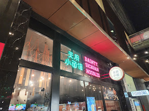

Dainty Sichuan Noodles QV
Chinese / Sichuan
A quick and casual noodle spot tucked away in Red Cape Lane at QV. Dainty Sichuan specialises in spicy and savoury rice noodle dishes straight from the heart of Sichuan, with generous portions and an easy QR-code ordering system perfect for a fast city lunch.
Signature dishes:
- Chongqing Spicy Noodle with Beef - $18
- Signature Sichuan Lamb Chop Rice Noodle Soup - $22
- Sichuan Cold Noodle - $14
Average price: $20 per person
Reservation deposit: No deposit required
Reserve